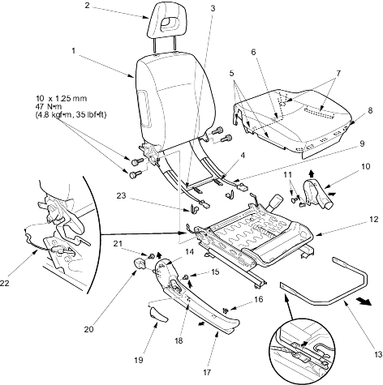

Seats
Front Seat Disassembly/Reassembly - Passenger's
|
20-40 |
|
SRS components are located in this area. Review the SRS component locations, precautions and procedures in the SRS section before performing repairs or service. Refer to the '01 CIVIC Shop Manual, P/N 62S5A00 on this CD.
NOTE:
- Take care not to tear the seams or damage the seat covers.
- Put on gloves to protect your hands.
- When prying with a flat-tip screwdriver, wrap it with protective tape to prevent damage.
Disassemble the seat as shown.
Reassemble the seat in the reverse order of disassembly and note these items:
- Apply multipurpose grease to the moving portion of the seat track.
- To prevent wrinkles in the seat cushion cover, stretch the material evenly over the pad.
- Make sure the rear seat access cable is connected properly on each side.
- Replace any damaged clips and replace the wire ties with new ones.
 |
- SEAT-BACK
- HEADREST
- SIDE AIRBAG HARNESS
- HANGER SPRING
- HOOKS
- Release the seat cushion cover from the cushion frame spring
- HOOKS
- HOOKS
(Five places)
- OPDS HARNESS
- CENTRE COVER
- CLIP
- SEAT CUSHION FRAME/SEAT TRACKS
- SLIDE LEVER
- HOOK
- CLIP
- CLIP
- RECLINE COVER
- HOOK
- RECLINE KNOB
- REAR SEAT ACCESS KNOB
- SCREW
- REAR SEAT ACCESS CABLE
- WIRE TIE
|